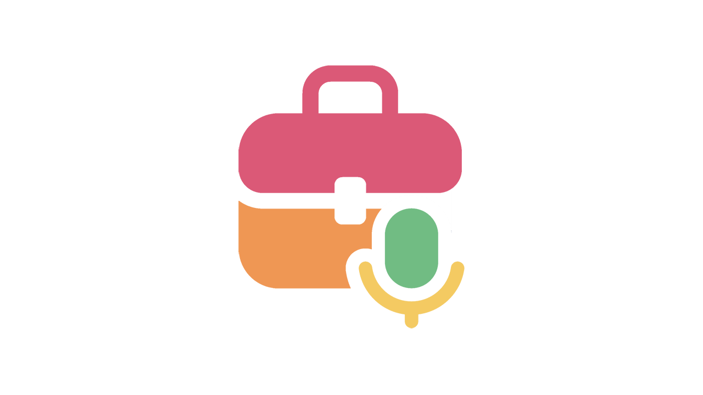

Podcasting for Professionals

I create as a podcaster for the RoguePlanetoid Podcast and write Articles including this one on RoguePlanetoid.com as well as present the studio-based and produced Talking Inspiration Podcast via niltonistudios.com, help developers with tutorials, talks and workshops at tutorialr.com and support developers with packages and upcoming course at comentsys.com and can connect with me on LinkedIn.
Types
A podcast is a series of interesting, informative or entertaining episodes that can be consumed on demand by listeners or viewers on podcasting platforms such as Spotify. You can have Solo podcast which are the fastest and most flexible format to produce with minimal coordination that provide full creative control and ideal for those with limited time such as the RoguePlanetoid Podcast. Co-host podcasts for a dynamic and conversational podcast benefitting from natural chemistry to be engaging with a shared workload from an aligned schedule. Interview podcasts can help build a network or make connection that bring fresh perspectives with potentially lower preparation required from guests who can bring their own stories from an outline such as Talking Inspiration. Narrative podcasts are for documentary and storytelling podcasts that are highly produced, well researched and full of detail working best as a series.
Format
Picking the right format for your podcast is important where you need to choose between audio where people can just listen to you and video where people will need to watch you or listen. Audio podcasts can be fast and easy to produce and require minimal equipment that has more forgiving editing and be ideal for listeners on the go, but it can be difficult to stand out. Video podcasts are visual and engaging but need even more equipment with more challenging editing but content can be repurposed but will compete with all other video content.
Options
Options for a podcast can differ between employees who are full-time and part-time, professionals or anyone else who may have a busy day or night and businesses who want to have a brand podcast. Employees may want a passion or career related podcast, enjoy speaking or storytelling, to solve a problem or answer a question but understand your audience and determine availability required. Businesses may want a brand podcast to engage or an internal podcast to inform about topics and domains related to business but understand your objectives and determine decisions required.
Location
Picking the right location to record your podcast key although this may be defined by budget, so you need to choose between creating your own home-based setup or using a professional studio-setup. Home setups offer cost-effective recording that is flexible and convenient where quality production is possible with right room treatment and equipment ideal for solo or remote and audio podcasts plus find any home-based podcasts and listen or watch them to see the kind of setup they have. Studio setups at a paid premium offer high quality and consistent recording with a defined schedule often with assistance from a producer or engineer ideal for interviews and video podcasts and for studio find podcasts recorded there to see if they look how or sound how you'd want them to for yourself.
Planning
Planning starts with a podcast name that is descriptive not clever a true crime podcast called Scottish Murders is far more obvious than a tech podcast called RoguePlanetoid Podcast. The right type of podcast from solo to narrative will depend on your idea as well as the format of either audio or video but also the budget which will influence this and the location. Main thought for a podcast subject is to niche down as much as possible and not have a catch-all approach, focus on what you know, want to share or what others are interested in. Prepare your first few episode ideas at least for spontaneous discussions or scripts when you are in full control of any narrative this will help know what to record or edit out later. Keep episode duration to a reasonable length to be engaged and can defined by the goal or outcome for example solo ones keep under half an hour or an hour for interviews.
Consider
Employee podcasts may need to consider perception as your voice, tone and opinions may be associated with your professional identity but can keep separation. Consider limited availability if needed during working hours by getting any time off and consider restricted subjects that you might not be able to share if related to your job as well any possible contractional alignment for side projects. Businesses podcasts may need to consider representation as those involved may intentionally or unintentionally become a spokesperson for the business but can keep boundaries between personal and company messaging. Consider messaging clarity so it aligns with company values and keep relevant parties involved to avoid issues with sensitive information and governance management for approvals.
Releasing
It is important to pick the right schedule for your podcast and consistency is key so audiences know what to expect and when to expect it to be released especially as loyal viewers or listeners will subscribe. Schedule your podcast on a cadence you can sustain, but you can have series with breaks to catch up or get ahead, batch and release weekly, fortnightly or monthly but protect time needed effectively. Consistency will help build trust with your audience, help enable a predictable workflow vital for professionals, improve discoverability and help avoid last-minute scrambling to release an episode.
Equipment
Podcast equipment is important, so you sound or look as great as possible, with the overall aim to get the best for your budget by getting it yourself for a home or accessing what you need in a studio. Get the best quality microphone for your budget you can such as Shure MV7+ via USB or Shure SM7B via XLR with mixer plus boom arm and mount to support and move it. Pop guard will reduce plosives such as "p"s and "b"s and sound helped with acoustic room treatment ranging from just scattered cushions up to anechoic panels. Sound your best by keeping a fist's width away from the microphone. Use the best quality video camera for your budget which can be a DSLR or high-end smart phone camera, you will need audio equipment as well as tripod and lighting. Quality set or backdrop will make your podcast look better which may be a challenge at home and much easier in a studio where these are provided. Look your best by avoiding narrow patterns on clothing.
Workflows
Workflows when doing anything can be very important but they are especially important when balancing podcasting as a professional with approaches which may include some unique considerations for employees or businesses. Employees with podcasts can follow an adaptive model based on availability but can save time by leveraging automation along with clearly defining the topic and boundaries for an episode and review reputation and risks by listening back and removing or recontextualising potentially problematic statements plus handle promotion and feedback on personal channels and engage with any respectfully. Businesses with podcasts can have a focused model that can leverage resources within the business and create a strategy for purpose and outcome goals which can't just be lots of downloads and check content for legal or compliance and obtain necessary approvals from leadership or other stakeholders plus measure reception and impact such as leads generated and iterate any strategy based on data.
Production
Audio for recording can by done with free software such as Zoom or Audacity which can be used for editing or paid options such as Adobe Audition and Descript which supports AI editing or you can pay a professional, but costs vary by length. Apply loudness normalisation for volume consistency throughout your podcast and with other podcasts of around -15 LUFS. Video production for editing can be done with free software such as Microsoft Clipchamp or paid options such as Adobe Premiere and Riverside which can record remote video or you can pay a professional, but costs vary by shots needed and complexity. On video maintain eye contact with guests and remember to react to guests visually such as nodding.
Publishing
Distribute your podcast for free on Spotify and Apple Podcasts for audio and video or YouTube or pay for Buzzsprout or Podbean which can include a podcast homepage or create paid content via Patreon. Show notes are key so your audience knows what to expect, you can use tools such as Castmagic.ai and if possible, transcripts when you have a dedicated podcast website which can help with discovery using SEO. Promote your podcast for free on social media and for employee or businesses then sharing on LinkedIn may help and make sure to respond to any feedback or comments. Be a guest on other podcasts as this is a great way to make more or different people aware of your podcast and for businesses with their own podcast use existing collaboration tools such as Teams or Slack to gather feedback or comments.
Experience
Experience is as a professional working as an employee full-time as a senior software engineer or running a business alongside podcasting with two totally different types, format and location of podcast. RoguePlanetoid Podcast is a solo and audio home-based podcast using existing equipment my wife had for the Scottish Murders podcast. Episodes are released on the first of each month, which I know I can achieve, only now missing January or a late release due to illness. I do everything including recording, editing, audiogram used for video visualisation along with promotion one highlight was an episode recorded live at Tech Connect last year plus batch recorded my latest episodes. Talking Inspiration is an interview and video studio-based podcast at Niltoni Studios in a co-production with savings that halved cost for half of any revenue and episodes driven by my or guest availability. Episodes have a basic structure shared with guests and we just turn up, photographed and we record, my guests have included Paul Lancaster, Charlotte Windebank, Jamie Hardesty, Herb Kim and Jeni Smith.
Conclusion
Podcasts are regular episodes of content that can be consumed on demand on podcasting platforms that is solo for full control, co-hosted for shared workload, interview for building connections or narrative for storytelling. Audio is easier and quicker to produce, suiting home or studio depending on your budget, where it is possible to sound consistent with other podcasts, which is ideal for listeners, but it can make it difficult to stand out. Video is visually engaging, but takes more time to produce, requires more equipment, suiting studio over home, consider that you will be competing with other video content so need to ensure audio and video quality. Employees can employ an adaptable workflow for a podcast about their passion or career that is flexible with sustainable scheduling that considers limited availability with options such as batch recording episodes. Businesses should have a focused objective for a brand or internal podcast that covers a related topic or domain of the business that considers leveraging resources with a clear strategy and goal for the podcast.